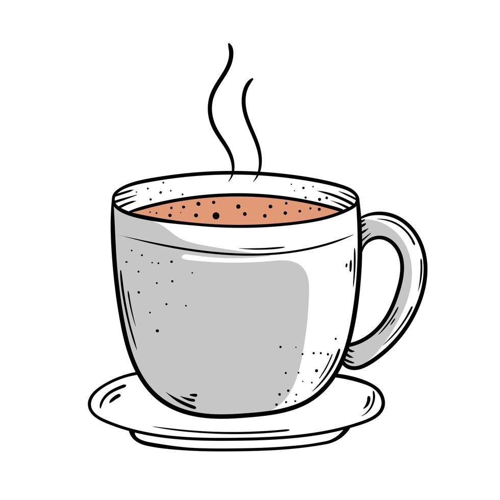

Preparo individual dos ingredientes.
Preparar os ingredientes juntos.
Um dia, Catarina, uma menina de 13 anos, acordou e estava sozinha em sua casa, então precisou preparar seu chá para tomar no café da manhã. No preparo da bebida, Catarina ligou para sua mãe e ela deu duas opções de como fazer.
Para começar a fazer o chá, o que ela deverá fazer:
Depois que ferver a água, coloque quatro colheres de chá em pó no coador e despeje a água pelo coador, assim o chá ficará pronto para consumo. Quando ficou pronto Catarina ficou em duvida se iria tomar no copo ou em uma xícara.
como a temperatura do chá ficou?
como a temperatura do chá ficou?

Ao acabar de tomar seu café da manhã, ela terá que decidir se vai para a escola pela rua de sua tia ou de sua avó, em que ambas são na direção da escola.